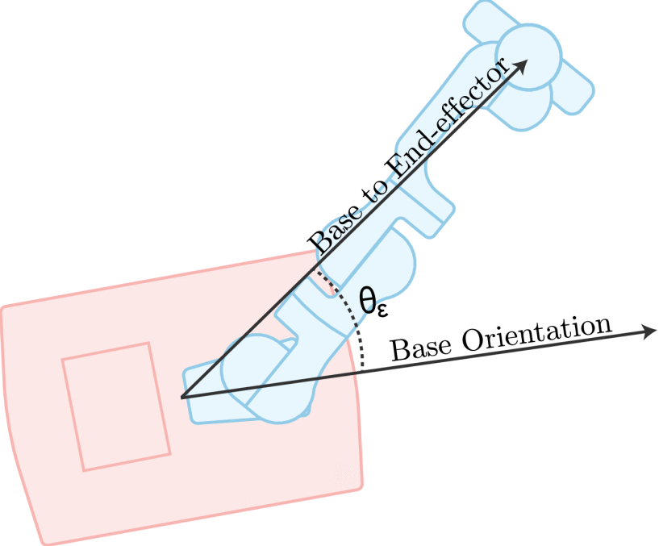

Holistic Hybrid Mobile Manipulator Control
This project details the design of a hybrid mobile manipulator progressed on the implementation of Design and Implementation of a Mobile Manipulator MQP. This work is heavily based on A Holistic Approach to Reactive Mobile Manipulation by Haviland et al. Their approach to treating the mobile manipulator as a single system in a motion controller enabled smooth/graceful motion that achieves a desired end effector pose and avoids joint position/velocity limits while maximizing Yoshikawa's Manipulability index. This project expands their work by incorporating three additional degrees of freedom (DOFs) in a parallel manipulator elevator between the mobile base and the robotic arm to create a 12-DOF system. We demonstrate this implementation through simulation in ROS1/ Gazebo.
Holistic Control Demos
https://youtu.be/WngMKqCbG34
12DOF Mobile Manipulator traversing towards a goal pose while maximizing Yoshikawa Manipulability to maintain desirable arm configurations.
What is a Mobile Manipulator?
A Mobile Manipulator can be defined as a robot arm (a manipulator) attached to a mobile base. These systems are usually extremely redudent by having many Degrees of Freedom (DOFs). Our system has 12/13 DOFs depending on the desired configuration.
A Mobile Manipulator is a highly valuable asset to researchers and manufacturers. A traditional robot arm is constrained to a workspace limited by joint limits, link lengths, and self collision. A Mobile Manipulator allows this workspace to travel which enables significantly more possibilties such as long distance pick and place, rescue operations, bomb defusing, etc.
Holistic Control
With a Mobile Manipulator system it became imperative to find a method to control the system to achieve basic goals such as pick and place. We simulate the mobile robot to ensure the controller will not produce motion that could damage the robot arms in the real world.
This simulation is based heavily off Holistic Mobile Manipulation, developed by Jesse Haviland, Niko Sünderhauf, and Peter Corke. We extend their research through additional redudency in a 3 degree of freedom (DOF) parallel manipulator elevator. We simplify the elevator as a serial linkage consisting of a prismatic joint and two revolute joints.
Table Of Contents
The remainder of this webpage explores the ground up process of deriving the controller used. We begin with an introduction of kinematics and deriving a basic controller. We expand these concepts
through the idea of an optimization based problem formatted as a Quadratic Program (QP). It is my hope that the writing contained in here will give a basic idea how to use this incredibly and
fascinating control approach to control their own mobile manipulators.
The authors Jesse Haviland, Niko Sünderhauf, and Peter Corke importance in this cannot be understated. I would have not been able to implement this controller without their novel
research.
Manipulator Kinematics Refresher
I will not be going into significant detail regarding the derivation of joint space and task space for manipulators as there is a wealth of information online detailing this process. For now, we assume there is a function \(F(q)\) that can map the joint space parameters to task space \(P\). We write this relationship as: $$P=F(q) \in \mathbb{R}^6$$ Where \(P\) is the end effector location in task space, and \(q\) are the joint angles of the manipulator arm. Often, a rigid-body transformation from frame {b} to {a} as \(^aT_b\) is used to define the arm from joint to joint to eventual end effector. Thus, we express the forward kinematics with respect to these transformation matrices as:
$$\begin{split} \begin{alignat}{3} ^nT_0 &= ^nT_{n-1}(q_n) \cdot ^{n-1}T_{n-2}(q_{n-1}) \cdot \ldots \cdot ^1T_0(q_1) \\ ^nT_0 &= \prod_{i=-n}^{-1} T(q_{-i}) \\ \end{alignat} \end{split} \quad \quad \quad \begin{split} T = \begin{bmatrix} r_{11} & r_{12} & r_{13} & t_1 \\ r_{21} & r_{22} & r_{23} & t_2 \\ r_{31} & r_{32} & r_{33} & t_3 \\ 0 & 0 & 0 & 1 \\ \end{bmatrix} \in \mathbb{R}^{4 \times 4} \end{split} $$
\(^aT_b\) is the homogenous transformation matrix used to strategically transition up a serial manipulator from the world frame to the end effector frame. The transformation matrix has two parts: a rotation matrix (\(r_{ij}\)) and the linear vector (\(t_i)\) to describe the transition from frame {b} to frame {a}. It is useful extract just the rotation matrix or linear information, so we define the functions \(\rho (T)\) and \(\tau (T)\) to isolate this information.$$ \begin{split} \rho (T) = \begin{bmatrix} r_{11} & r_{12} & r_{13} \\ r_{21} & r_{22} & r_{23} \\ r_{31} & r_{32} & r_{33} \\ \end{bmatrix} = R \in \text{SO(3)} \end{split} \quad \quad \quad \begin{split} \tau (T) = \begin{bmatrix} t_1 \\ t_2 \\ t_3 \end{bmatrix} \in \mathbb{R}^3 \end{split} \\ $$
To relate \(P\) to \(T\), we can define the following relationship.$$ P = \begin{bmatrix} \tau(^nT_0) \\ \rho(^nT_0) \\ \end{bmatrix} $$
Deriving the Jacobian
The forward kinematics relationship can be expanded by taking the time derivative.$$ \begin{split} \begin{alignat}{2} \frac{\partial P}{\partial t}&=\frac{\partial F(q)}{\partial t} \\ v &= J(q)\dot{q} \end{alignat} \end{split} \quad \quad \begin{split} J_i (q) = \begin{bmatrix} J_{v_i} (q) \\ J_{w_i} (q) \\ \end{bmatrix} \in \mathbb{R}^6 \end{split} $$
Where \(v\) is what's known as the Spatial Velocity. The manipulator Jacobian, \(J \in \mathbb{R}^{6\times n}\), contains linear (\(J_{v_i} (q)\)) and angular (\(J_{w_i} (q)\)) components for each frame, \(i\). To find an indepth solution of calculating the Jacobian, reference to outside sources. Using this relationship, we are able to determine the linear and angular velocites of the end effector knowing only the current joint angles, the current joint angular velocities, and the linkage lengths.Creating a Resolved-Rate Motion Controller (RRMC)
We can now make a Resolved Rate Motion Controller by introducing the idea of error- where the end effector currently is compared against where we want it to be. By evaluating $$ e(q) = \begin{bmatrix} \tau\big(^{e^*}T_0(q)\big) - \tau\big(^nT_0(q)\big) \\ \alpha\Big(\rho\big(^{e^*}T_0(q)\big) \rho\big(^nT_0(q)\big)^\top\Big) \\ \end{bmatrix} \in \mathbb{R}^6 $$ Where \(e(q)\) is the error function- comparing the desired pose \(e^*\) with the current position of the end effector. We massage the homogenous transfer function to extract the linear and angular components. \(\alpha(\cdot)\) converts a rotation matrix, \(R\), into a column vector of euler-angles (\(\mathbb{R}^{3 \times 3} \rightarrow \mathbb{R}^3\)). We relate \(e\) to the Spatial Velocity, \(v\) to create a velocity vector pointing towards the desired pose. $$ v = \text{k}e $$ Where \(\text{k}\) is typically a singular value or \(diag(k_l, k_l, k_l, k_r, k_r, k_r)\) as a proportional gain. \(\text{k}\) has the units of \(s^{-1}\) and directly influences the 'strength' the error has towards pushing the arm in the direction of the desired pose. A larger \(k\) value will produce a faster convergence. To complete the equation, we must reorganize the spatial velocity equation to include error. $$ \begin{alignat}{2} v = J(q)\dot{q} \Rightarrow \dot{q} &= J(q)^+ v \\ \dot{q} &= J(q)^+ \text{k}e \end{alignat} $$ \((\cdot)^+\) is the moore penrose pseudo inverse. If the Jacobian is square, the inverse may be used intsead. Here, we observe at each instance a new instanous joint angle velocity is calculated. By running this equation continously the arm will guide itself along the velocity vector and traverse towards to the desired pose in an exponential decay manner.
Quadratic Program Introduction
A Quadratic Program (QP) has the form
$$\begin{alignat}{3} \underset{x}{\text{minimize$:$}} &\quad& f_0(x) &= \frac{1}{2}x^\top{}Px + q^\top{}x \\ \text{subject to$:$} &\quad& Gx &\le h \\ &\quad& Ax &= b \end{alignat}$$
Where \(x\) is the optimization variable, \(f_0(x)\) is the optimization cost function, and the subject to equations are constraints put on the cost function. For the cost function to have a global minimum, matrix \(P\) must be positive definite. It is desirable to turn a QP into some form that a serial robot arm can utilize.
RRMC into QP
Taking the idea of the RRMC, we can get the exact same result by reorganizing it into a QP. $$\begin{alignat}{3} \underset{\dot{q}}{\text{minimize$:$}} &\quad& f_0(\dot{q}) &= \frac{1}{2}\dot{q}^\top{}1_n\dot{q} \\ \text{subject to$:$} &\quad& J(q)\dot{q} &= v \\ &\quad& \dot{q}^- &\le \dot{q} \le \dot{q}^+ \end{alignat}$$
Introduction to Manipulability
When a robotic arm has more than 6 DOFs it is known as kinematically redundant. In this vein, the arm is now capable of an envelope of valid solutions for reaching a desired end-effector pose. We call this region the null-space. If there are an infinite number of valid configurations within an envelope this begs the question of how to determine what configurations are best. In 1985, Tsuneo Yoshikawa published Manipulability of Robotic Mechanisms outlining a mathematical basis for evaluting 'better' configurations with a manipulability metric. Thereafter, many different manipulability metrics were developed but Yoshikawa Manipulability remains popular due to its longstanding prominance in literature and well understood mechanics.

Different configurations for reaching the same pose. The Yoshikawa Manipulability is calculated in real-time and printed above the end-effector
Looking in the above example, what configuration is best for the arm? It's easy to say the one where the arm is in the least 'wonky' position but what does this mean? Yoshikawa developed a manipulability ellipsoid to help answer this question. The volume of the ellipsoid, the Yoshikawa Manipulability metric, is defined as the following:
\[m(q)=\sqrt{\det({\hat{J}(q)\hat{J}(q)^\top{}})}\]
Here, \(\hat{J}\) is only the linear or angular part of the Jacobian. Since the linear and angular parts contain different units (m/s or rad/s), the metric becomes ambigious when the Jacobian is not seperated. Typically, the Yoshikawa Manipulability utilizes the linear component of the Jacobian.
It's helpful to visualize the ellipsoid for different robotic configurations to gain an intuition to what Yoshikawa Manipulability definition means.

Look at the poorly conditioned manipulator- the arm cannot extend further out but it can swing side to side. The prinicipal axes of the ellipsoid reflect this relationship as the lateral axis is long, demonstrating the arm, in its current configuration, can quickly move side to side. However, the arm cannot extend out much further as it's already quite extended so the other axis of the ellipsoid in this direction is very small. This means that the volume of the ellipsoid would be small as well. The well conditioned manipulator, however, is able to move in any direction in about the same speed in its current configuration. This makes the manipulability ellipsoid look more spherical and, thus, have a larger volume.
It's ideal to have the arm in a well conditioned configuration to help it handle any problems it may encounter. For example, a person could be injured with the arm in poor configuration as the arm could not move out of the way fast enough. Further, when lifting heavy objects the poor configuration will have a much larger level arm which can damage the electronics from the stress. Simply put, if the arm is in a good standing configuration it can employ an apprioriate response that it otherwise may not be able to do in a poorly conditioned configuration.
To answer the previously asked question which configuration is best for a given end-effector pose, look back to the gif. Notice that the manipulability is highest when the arm has mostly right angles. This is entirely intentional as right angles keep the arm together and not extended. Further, this position is usually around the middle ground of each actuators physical limits, allowing it to turn either counter clockwise or clockwise with ease.
Manipulability and Null Space
Let us see what happens when we take the time derivative of manipulability. $$\begin{alignat}{2} \frac{\text{d} \ m(t)}{\text{d}t} &= \frac{1}{2m(t)}\frac{\text{d}}{\text{d}t}\text{det}(\hat{J}(q)\hat{J}(q)^\top) \\ \dot{m} &= J_{m}^\top{}(q)\dot{q} \end{alignat}$$ Where $$\begin{alignat}{1} J_m^\top{} = m \begin{bmatrix} \text{vec}\Big(\hat{J}(q)\hat{H_1}(q)^\top{}\Big)^\top{}\text{vec}\Big((\hat{J}(q)\hat{J}(q)^\top{})^{-1}\Big) \\ \text{vec}\Big(\hat{J}(q)\hat{H_2}(q)^\top{}\Big)^\top{}\text{vec}\Big((\hat{J}(q)\hat{J}(q)^\top{})^{-1}\Big) \\ \vdots{} \\ \text{vec}\Big(\hat{J}(q)\hat{H_n}(q)^\top{}\Big)^\top{}\text{vec}\Big((\hat{J}(q)\hat{J}(q)^\top{})^{-1}\Big) \\ \end{bmatrix} \in \mathbb{R}^n \end{alignat}$$ \(J_m^\top{}\) is the manipulability Jacobian, \(\text{vec}(\cdot)\) is a vector operation to convert a matrix column-wise into a column vector (\(\mathbb{R}^{a\times{}b} \rightarrow \mathbb{R}^{ab}\)), and \(\hat{H_i}\) is the translational or rotational component of \(H_i\) which is the \(i^{th}\) component of the manipulator Hessian tensor \(H\).
A kinematically redundant manipulator has null space, as we explored above. However, we can augment our spatial velocity equation (\(v = J(q)\dot{q}\)) by restricting \(v=0\) to result in no end effector motion. We can project \(q_{null}\) onto the null space to maintain the 0 spatial velocity objective. The equation now takes the form: $$\begin{alignat}{1} \dot{q} = J(q)^+v + \big(1_n-J(q)^+J(q)\big)\dot{q}_{null} \end{alignat}$$ Here, the symbol \(\dot{q}_{null}\) represents the desired joint velocities specifically intended for the null-space motion. This notation indicates the target or planned velocities for the robot's joints when executing tasks within the null space, which is a subspace orthogonal to the primary task space. Park suggested utilizing the Yoshikawa manipulability metric gradient as \(\dot{q}_{null}\). This configuration would push the robot configuration into higher manipulability orientations without hindering the primary task objective. The final equation takes the form: $$\begin{alignat}{1} \dot{q} = J(q)^+v + \frac{1}{\lambda}\big(1_n-J(q)^+J(q)J_m(q)\big) \end{alignat}$$ Where \(\lambda\) is a scalar gain to scale the enforcment of the manipulability maximization influence. We can import this equation into a Quadratic Program problem.
Park's Manipulability Equation as a QP
We reorganize Parks equation into a QP cost function to find the minimum joint-velocity norm needed to achieved the desired end-effector velocity.$$\begin{alignat}{2} \tag{pQP} \underset{\dot{q}}{\text{minimize$:$}} &\quad& f_0(\dot{q}) &= \frac{1}{2}\dot{q}^\top{}\lambda 1_n\dot{q} - J_{m}^\top(q)\dot{q} \\ \text{subject to$:$} &\quad& J(q)\dot{q} &= v \\ \end{alignat}$$ Building off this concept can expand the QP to incorporate a mobile base and enforce other conditions such as velocity and positional joint limits.
Holistic Hybrid Manipulator QP - The Whole Deal
We've introduced the idea of error, manipulability maximization for redundant manipulators, and quadratic programs. It would beneficial
to combine all these elements into a mobile manipulator with hybrid actuators to keep the entire system control under one governing equation.
We can begin this process by identifying the different sections of the hybrid mobile manipulator.
We define \(q_a\), \(q_{elev}\), \(q_b\) as the joints defining the arm, the elevator, and base. We simplify the system to be a serial manipulator. The base, as a nonholonmic configuration,
is simply a revolute and forward facing prismatic joint. The elevator system was crudely simplified into two perpendicular superimposed revolute joints and a prismatic joint. We divide the elevator joints into
\(q_{elev_r}\) and \(q_{elev_p}\) to reflect the revolute and prismatic joint dicrepency. Since this project utilized the Panda Arm, all \(q_a\) are revolute joints.
Joint Limits Dampeners, Velocity Limits, and Slack
We can directly incorporate velocity limits into the QP as restrictions to the cost function. In our extremely redundant system, this ideal to prevent the elevator or arm from over exerting itself
in an unobtainable configuration. We can simply write:
$$
\text{subject to$:$} \quad \dot{q}^- \le \dot{q} \le \dot{q}^+ \\
$$
in the QP. With the hybrid manipulator, we can restrict the velocities of all joints independently.
Since the QP is written with respect to the joint angle velocity, a restriction to joint angle position is not as trivial. One solution create a velocity
dampener that activates when a joint angle is approaching its physical limit. This effectively acts as a positional limit gaurd. We write the relationship
$$
\dot{q} \le \frac{\rho - \rho{}_s}{\rho{}_i - \rho{}_s} \quad \text{if} \ \rho < \rho{}_i
$$
Where \(\rho \) is the angle or distance to the nearest joint limit. \(\rho_i\) is the distance from the limit to begin enforcing the velocity dampener and \(\rho_s\)
is the stopping value that \(\rho\) can never surpass. This relationship can be reformatted into the QP as
$$
\dot{q} \le \begin{bmatrix}
\frac{\rho_0 - \rho{}_s}{\rho{}_i - \rho{}_s} \\
\vdots \\
\frac{\rho_n - \rho{}_s}{\rho{}_i - \rho{}_s}
\end{bmatrix}
$$
However, these constraints can introduce a local minima preventing the robot from reaching the goal. To avoid this behavior, a slack term can be added to allow for some
deviation from the end effector velocity.
$$
v(t) = v^*(t) - \delta(t)
$$
Where \(v^*\) is the desired spatial velocity and the slack, \(\delta(t) \in \mathbb{R}^6\), is in intentional error to be chosen by the QP. Now, we augment
the optimization variable, \(q\), to include the slack variable as
$$
x = \begin{bmatrix}
\dot{q} \\ \delta \\
\end{bmatrix} \in \mathbb{R}^{n+6}
$$
as \(x\) to be the new optimization variable. To have the QP reflect this augmentation, it is altered as follows:
$$
\begin{alignat}{3} \tag{xQP}
\underset{x}{\text{minimize$:$}} &\quad& f_0(x) &= \frac{1}{2}x^\top{}Qx \\
\text{subject to$:$} &\quad& \mathcal{J}(q)x &= v \\
&\quad& Ax &\le B \\
&\quad& X^- &\le x \le X^+
\end{alignat}
$$
with
$$\begin{alignat}{4}
X^{-,+} &= \begin{bmatrix} \dot{q}^{-,+} \\ \delta{}^{-,+} \end{bmatrix} \in \mathbb{R}^{n+6} \\
A &= \begin{bmatrix} \pm{}1_{nxn+6}\end{bmatrix} \in \mathbb{R}^{n\times (n+6)}\\
B &= \begin{bmatrix}
\frac{\rho_0 - \rho{}_s}{\rho{}_i - \rho{}_s} \\
\vdots \\
\frac{\rho_n - \rho{}_s}{\rho{}_i - \rho{}_s}
\end{bmatrix} \in \mathbb{R}^{n}\\
Q &= \begin{bmatrix} \lambda_q & 0_{6\times 6} \\
0_{n\times n} & \lambda_{\delta} \\
\end{bmatrix} \in \mathbb{R}^{(n+6)\times (n+6)}\\
\mathcal{J} &= \begin{bmatrix}
J(q) & 1_{6} \\
\end{bmatrix} \in \mathbb{R}^{6\times (n+6)}
\end{alignat}$$
Adding Manipulability Maximization to the QP
However, by this stage we have not included any manipulability maximization conditions. We look to Park's implementation (pQP) as a QP for inspiration. The QP becomes $$\begin{alignat}{3} \tag{cQP} \underset{x}{\text{minimize$:$}} &\quad& f_0(\dot{x}) &= \frac{1}{2}x^\top{}Qx + C^\top{}x \\ \text{subject to$:$} &\quad& \mathcal{J}(q)x &= \begin{smallmatrix} b \\ \space\end{smallmatrix}v_e \\ &\quad& Ax &\le B \\ &\quad& X^- &\le x \le X^+ \end{alignat}$$ with $$ C = \begin{bmatrix} J_m \\ 0_{6x1} \end{bmatrix} \in \mathbb{R}^{n+6} $$ \(J_m\) is the manipulability Jacobian previously explored. This addition is the same as adding pushing the null space in the manipulability gradient reformatted as a QP. This QP is now capable of maximizing manipulability for kinematically redundant manipulators, avoiding joint limits, and limiting velocities while traversing towards the desired end effector pose. Additionally, with the benefit of slack, joint, velocity, and manipulability maximization constraints are relaxed to help avoid local minima.
Adding the Base and Elevator
Thus far, our QP has been limited to a robot that is fixed to the world frame. In a mobile manipulator, the robot arm is fixed to the base and is able to freely traverse
the world. As an additional problem, our robot is a hybrid mobile manipulator, situated with an elevator that must also be included. Representing the motion of the manipulator
is thus written as
$$\begin{split}
\begin{alignat}{2}
q &= \begin{bmatrix}
q_b & q_{elev} & q_a
\end{bmatrix}^\top \\
\dot{q} &= \begin{bmatrix}
\dot{q_b} & \dot{q_{elev}} & \dot{q_a}
\end{bmatrix}^\top
\end{alignat}
\end{split} \quad \rightarrow \quad
\begin{split}
x = \begin{bmatrix}
\dot{q} & \delta
\end{bmatrix} ^\top
\end{split}
$$
To address a moving base, we reformat our spatial velocity to be with respect to the base frame instead of the world frame.
$$
\begin{smallmatrix} n \\ \space\end{smallmatrix}v_b(t) = \begin{smallmatrix} n \\ \space\end{smallmatrix}v_b^*(t)-\delta{}(t) \\
$$
This also causes the Jacobian to be with respect to the base frame, as well.
The elevator is a 3DOF parallel system akin to a crude stewart platform. So far, the QP representation has been expressed with manipulators being
serial which poses an immediate issue. To solve this, we approximate the kinematics of the elevator to be two perpendicular revolute joints and a vertical prismatic joint in a serial configuration.
This model allows the elevator to tilt along the roll and pitch axis and translate vertically while also satisfying our serial model representation.
Similarly, the base drivetrain is assumed to be a 2DOF tank drive robot. This means the robot rotates about the centroid of its four mecanum wheels and can drive forwards and backwards. While we designed
and implemented the mecanum wheels for a holonomic 3DOF configuration, in practice this was extremely unstable and unreliable. So, we limit the movement to a simple 2DOF style driving robot. Assuming there is no
slippage- The forward kinematics of a holonomic mecanum wheel system are
$$ \begin{bmatrix} v_x \\ v_y \\ w_z \\ \end{bmatrix} = \frac{r}{4} \begin{bmatrix} 1 & 1 & 1 & 1 \\ -1 & 1 & 1 & -1 \\ -\frac{1}{l_x+l_y} & \frac{1}{l_x+l_y} & -\frac{1}{l_x+l_y} & \frac{1}{l_x+l_y} \\ \end{bmatrix} \begin{bmatrix} w_{fl} \\ w_{fr} \\ w_{rl} \\ w_{rr} \\ \end{bmatrix} $$ Where \(v_x\), \(v_y\), and \(w_z\) are world linear and angular velocities abound the local base frame X, Y, and Z axes respectively. \(r\), is the distance to the center of rotation and \(l_x\), and \(l_y\) are the distance to the robots center from the wheels projected on the global X and Y axis, respectively. With the 2DOF configuration, we can immediately simplify this model with two constraints
- \(v_y = 0\)
- \(w_{fl} = w_{rl} \quad, \quad w_{fr} = w_{rr}\)

Since we assume a 2DOF drive train configuration, it would be ideal for the arm to remain 'forward facing.' Haviland et al showcase this relationship as
$$
\epsilon = \text{k}_e \theta_\epsilon
$$
Where \(\epsilon\) is a scalar influenced by a gain \(\text{k}_e\) to determine how much effort should be placed into aligning the 'Base to End Effector' vector and 'Base Orientation' vector.
\(\theta_\epsilon\) is calculated as \(\theta_{\epsilon} = \text{atan2}(^{1,8}T_b, \ ^{0,8}T_b) \).
To incorporate this relationship into the QP, we add this penalty to only the first revolute joint as
$$
\epsilon = \begin{bmatrix} -k_\epsilon\theta_\epsilon \\
0_{n-1}
\end{bmatrix}
$$
Reformatting into the Hybrid Holistic Manipulator QP
Our QP will take the same form as (cQP)
$$\begin{alignat}{3} \tag{hQP} \underset{x}{\text{minimize$:$}} &\quad& f_0(x) &= \frac{1}{2}x^\top{}Qx + C^\top{}x \\ \text{subject to$:$} &\quad& \mathcal{J}(q)x &= \begin{smallmatrix} b \\ \space\end{smallmatrix}v_e \\ &\quad& Ax &\le B \\ &\quad& X^- &\le x \le X^+ \end{alignat}$$
with $$ \begin{split} \begin{alignat}{5} x &= \begin{bmatrix} \dot{q} \\ \delta{} \end{bmatrix} \\ X^{-,+} &= \begin{bmatrix} \dot{q}^{-,+} \\ \delta{}^{-,+} \end{bmatrix} \\ A &= \begin{bmatrix} A_b \\ A_{elev_p} \\ A_{elev_r} \\ A_a \\ 1_6 \end{bmatrix} = \begin{bmatrix} \pm{}1_{nxn+6}\end{bmatrix} \\ B &= \begin{bmatrix} 0_b \\ B_{elev_p} \\ B_{elev_r} \\ B_a \end{bmatrix} \\ B_{elev_{p,r}},B_a &= \begin{bmatrix} \frac{q_{elev_{p,r},a} - p_{s_{elev_{p,r},a}}}{p_{i_{elev_{p,r},a}} - p_{s_{elev_{p,r},a}}} \\ \vdots{} \\ \frac{q_{n} - p_{s_{elev_{p,r},a}}}{p_{i_{elev_{p,r},a}} - p_{s_{elev_{p,r},a}}} \end{bmatrix} \end{alignat} \end{split} \quad \quad \begin{split} \begin{aligned} \mathcal{J}(q) &= \begin{bmatrix} \begin{smallmatrix} n \\ \space\end{smallmatrix}J_b(q) & 1_{6x6} \end{bmatrix} \\ Q &= \begin{bmatrix} diag(\lambda{}_b) & \space & \space & 0_{(n+6)\times(n+6)} \\ \space & diag(\lambda{}_{elev}) & \space & \space \\ \space & \space & diag(k_a) \space \\ 0_{(n+6)\times(n+6)} & \space & \space & diag(\lambda{}_\delta{}) \end{bmatrix} \\ C &= \begin{bmatrix} J_m + \epsilon \\ 0_{6x1} \end{bmatrix} \\ J_m &= \begin{bmatrix} 0_b \\ J_{m,a}^\top{} \end{bmatrix} \\ \end{aligned} \end{split} $$ To begin, observe how each major part of the hybrid mobile manipulator has been decomposed: base (\(b\)), elevator (\(elev\)), and arm (\(a\)) The elevator, in particular, has been seperated into its prismatic and revolute components (\(elev_{p}\) and \(elev_r\)).
Q Matrix
We define Q as a diagonal matrix to weight one-to-one the corresponding optimization variables. However, some of these gains are constants while others are variables. We assign dynamic gains to the mobile base, elevator, and slack to be with respect to error. We define $$ \begin{alignat}{3} k_a &= \text{constant} \\ \lambda{}_{elev} &= \begin{pmatrix} \frac{1}{||e||} & k_{elev_r}\end{pmatrix} \\ \lambda{}_b,\lambda{}_\delta &= \frac{1}{||e||} \\ \end{alignat} $$ where \(||e||\) is the distance of the 6DOF error vector (e). At the start of the operation, the distance to the goal will be large- causing the gain to become small. This influences the QP to put more emphasis on the base joints to drive forward at the start and less when the end effector is near the goal. We use this same concept for the prismatic joint of the elevator and the slack variable. However, we treat the two revolute joints of the elevator as part of the robot arm, creating a psuedo 9DOF serial linkage. Since we always want the arm to travel towards the goal, we use a constant gain \(k_a\) for the explicit arm joints, and \(k_{elev_r}\) for the psuedo revolute joints of the elevator.
C Matrix
The \(C\) matrix incorporates the Manipulability Jacobian and nonholonomic positioning bias. We expiremented with including the psuedo revolute elevator joints as apart of the Manipulability Jacobian but it is still being evaluated if this was fruitful. At the minimum, all 7 DOF from the arm are included in the Manipulability Jacobian. This is appended to a 0 matrix to not influence the base or prismatic elevator joint. Since \(\epsilon\) is proportional scaler, it is perfectly fine to combine it with the Manipulability Jacobian since they influence different parts of the system.
\(X^{-,+}\) Boundaries
As explored previously, we can cap the velocity of each joint in the system regardless of dimensionality. That is, this restriction contains both linear and angular velocity caps. Since \(x\) contains the slack variable, we can also limit the maximum amount of slack the QP can output. This prevents the arm from straying too far from the error vector.
A & B Matricies
The relationship \(Ax \le B\) defines the position dampener through a decaying velocity function. Indeed, we define a range to dampen for linear and angular components or specific sections. For example, the drive train has no such dampener as it can drive and spin around itself indefinitely. However, the arm has physical limitations to how far each joint can articulate and this value must be obeyed to prevent damage. In this implementation, we seperate the base, the prismatic elevator joint, the revolute elevator joints, and the arm joints.
Capstone Presentation
Additional Media
Math References
Deriving the Manipulator Hessian Tensor
$$\begin{alignat}{4} \dot{J} &= \frac{\text{d}J(q)}{\text{d}t} \\ &= \frac{\partial J(q)}{\partial q_1}\dot{q_1} + \frac{\partial J(q)}{\partial q_2}\dot{q_2} + \dots +\frac{\partial J(q)}{\partial q_n}\dot{q_n} \\ &= \Bigg(\frac{\partial J(q)}{\partial q_1} \quad \frac{\partial J(q)}{\partial q_2} \quad \dots \quad \frac{\partial J(q)}{\partial q_n}\Bigg)\dot{q} \\ & = H(q)\dot{q} \in \mathbb{R}^{n \times 6 \times n} \end{alignat}$$